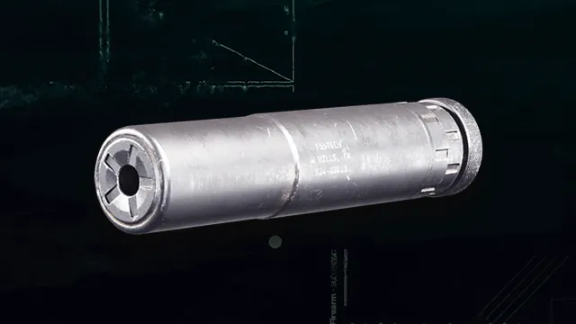
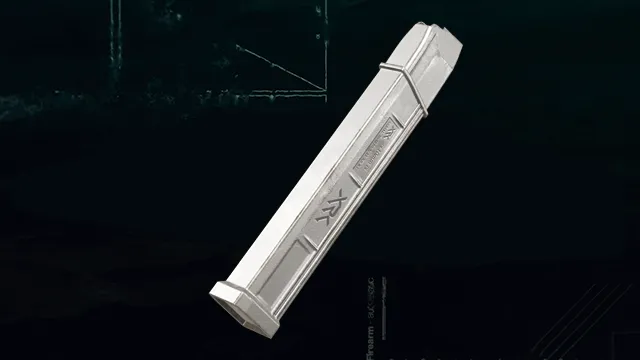

Superssor Monolítico
O Supressor Monolítico oferece supressão de som superior e maior alcance. O aumento moderado de peso afeta a agilidade. O acessório ideal para ampliar seu alcance de dano em mapas grandes como Verdansk, mantendo a ocultação proporcionada por um supressor.
Conversão SWAT 5.56 Grau
Converte a SWAT 5.56 em uma arma totalmente automática com menor dano e alcance, mas com maior precisão, mobilidade e manuseio. Equipa um novo Cano e Carregador padrão e desbloqueia um Carregador estendido exclusivo de 50 munições. Bloqueia acessórios de Cano.
Carregadores automáticos C9 10mm de 30 cartuchos
Kit de conversão para usar munição de maior calibre 10mm Auto, aumentando o poder de parada. Embora a conversão resulte em maior recuo e uma cadência de tiro ligeiramente reduzida, o dano extra, alcance e velocidade tornam este acessório uma consideração valiosa ao enfrentar inimigos em mapas maiores.
Conversão Mini-Rocket 7.62
Converte o Goblin Mk2 em uma arma totalmente automática com munição de foguetes explosivos. A capacidade de dano por área vem às custas da velocidade da bala e da cadência de tiro. Equipa um novo cano e carregador padrão. Bloqueia acessórios de Cano, Boca de Cano e Carregador.